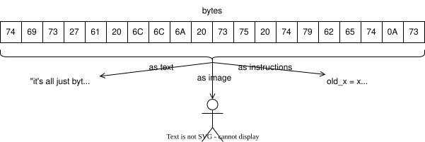
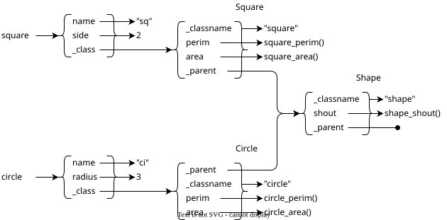

Objects and Classes
- Objects are useful without classes, but classes make them easier to understand.
- A well-designed class defines a contract that code using its instances can rely on.
- Objects that respect the same contract are polymorphic, i.e., they can be used interchangeably even if they do different specific things.
- Objects and classes can be thought of as dictionaries with stereotyped behavior.
- Most languages allow functions and methods to take a variable number of arguments.
- Inheritance can be implemented in several ways that differ in the order in which objects and classes are searched for methods.
We are going to create a lot of objects and classes in these lessons, and they will be a lot easier to use if we understand how they are implemented. Historically, object-oriented programming (OOP) was invented to solve two problems:
What is a natural way to represent real-world “things” in code?
How can we organize code to make it easier to understand, test, and extend?
2.1 Objects
As a motivating problem, let’s define some of the things a generic shape in a drawing package must be able to do:
class Shape:
def __init__(self, name):
self.name = name
def perimeter(self):
raise NotImplementedError("perimeter")
def area(self):
raise NotImplementedError("area")A specification like this is sometimes called a contract because an object must satisfy it in order to be considered a shape, i.e., must provide methods with these names that do what those names suggest. For example, we can derive classes from Shape to represent squares and circles.
class Square(Shape):
def __init__(self, name, side):
super().__init__(name)
self.side = side
def perimeter(self):
return 4 * self.side
def area(self):
return self.side ** 2
class Circle(Shape):
def __init__(self, name, radius):
super().__init__(name)
self.radius = radius
def perimeter(self):
return 2 * math.pi * self.radius
def area(self):
return math.pi * self.radius ** 2Since squares and circles have the same methods, we can use them interchangeably. This is called polymorphism, and it reduces cognitive load by allowing the people using related things to ignore their differences:
examples = [Square("sq", 3), Circle("ci", 2)]
for thing in examples:
n = thing.name
p = thing.perimeter()
a = thing.area()
print(f"{n} has perimeter {p:.2f} and area {a:.2f}")sq has perimeter 12.00 and area 9.00
ci has perimeter 12.57 and area 12.57But how does polymorphism work? The first thing we need to understand is that a function is an object. While the bytes in a string represent characters and the bytes in an image represent pixels, the bytes in a function are instructions (Figure 2.1). When Python executes the code below, it creates an object in memory that contains the instructions to print a string and assigns that object to the variable example:
def example():
print("in example")
We can create an alias for the function by assigning it to another variable and then call the function by referencing that second variable. Doing this doesn’t alter or erase the connection between the function and the original name:
alias = example
alias()in exampleWe can also store function objects in data structures like lists and dictionaries. Let’s write some functions that do the same things as the methods in our original Python and store them in a dictionary to represent a square (Figure 2.2):
def square_perimeter(thing):
return 4 * thing["side"]
def square_area(thing):
return thing["side"] ** 2
def square_new(name, side):
return {
"name": name,
"side": side,
"perimeter": square_perimeter,
"area": square_area
}
If we want to use one of the “methods” in this dictionary, we call it like this:
def call(thing, method_name):
return thing[method_name](thing)
examples = [square_new("sq", 3), circle_new("ci", 2)]
for ex in examples:
n = ex["name"]
p = call(ex, "perimeter")
a = call(ex, "area")
print(f"{n} {p:.2f} {a:.2f}")The function call looks up the function stored in the dictionary, then calls that function with the dictionary as its first object; in other words, instead of using obj.meth(arg) we use obj["meth"](obj, arg). Behind the scenes, this is (almost) how objects actually work. We can think of an object as a special kind of dictionary. A method is just a function that takes an object of the right kind as its first parameter (typically called self in Python).
2.2 Classes
One problem with implementing objects as dictionaries is that it allows every single object to behave slightly differently. In practice, we want objects to store different values (e.g., different squares to have different sizes) but the same behaviors (e.g., all squares should have the same methods). We can implement this by storing the methods in a dictionary called Square that corresponds to a class and having each individual square contain a reference to that higher-level dictionary (Figure 2.3). In the code below, that special reference uses the key "_class":
def square_perimeter(thing):
return 4 * thing["side"]
def square_area(thing):
return thing["side"] ** 2
Square = {
"perimeter": square_perimeter,
"area": square_area,
"_classname": "Square"
}
def square_new(name, side):
return {
"name": name,
"side": side,
"_class": Square
}
Calling a method now involves one more lookup because we have to go from the object to the class to the method, but once again we call the “method” with the object as the first argument:
def call(thing, method_name):
return thing["_class"][method_name](thing)
examples = [square_new("sq", 3), circle_new("ci", 2)]
for ex in examples:
n = ex["name"]
p = call(ex, "perimeter")
a = call(ex, "area")
c = ex["_class"]["_classname"]
print(f"{n} is a {c}: {p:.2f} {a:.2f}")As a bonus, we can now reliably identify objects’ classes and ask whether two objects are of the same class or not by checking what their "_class" keys refer to.
Arguments vs. Parameters
Many programmers use the words argument and parameter interchangeably, but to make our meaning clear, we call the values passed into a function its arguments and the names the function uses to refer to them as its parameters. Put another way, parameters are part of the definition, and arguments are given when the function is called.
2.3 Arguments
The methods we have defined so far operate on the values stored in the object’s dictionary, but none of them take any extra arguments as input. Implementing this is a little bit tricky because different methods might need different numbers of arguments. We could define functions call_0, call_1, call_2 and so on to handle each case, but like most modern languages, Python gives us a better way. If we define a parameter in a function with a leading *, it captures any “extra” values passed to the function that don’t line up with named parameters. Similarly, if we define a parameter with two leading stars **, it captures any extra named parameters:
def show_args(title, *args, **kwargs):
print(f"{title} args '{args}' and kwargs '{kwargs}'")
show_args("nothing")
show_args("one unnamed argument", 1)
show_args("one named argument", second="2")
show_args("one of each", 3, fourth="4")nothing args '()' and kwargs '{}'
one unnamed argument args '(1,)' and kwargs '{}'
one named argument args '()' and kwargs '{'second': '2'}'
one of each args '(3,)' and kwargs '{'fourth': '4'}'This mechanism is sometimes referred to as varargs (short for “variable arguments”). A complementary mechanism called spreading allows us to take a list or dictionary full of arguments and spread them out in a call to match a function’s parameters:
def show_spread(left, middle, right):
print(f"left {left} middle {middle} right {right}")
all_in_list = [1, 2, 3]
show_spread(*all_in_list)
all_in_dict = {"right": 30, "left": 10, "middle": 20}
show_spread(**all_in_dict)left 1 middle 2 right 3
left 10 middle 20 right 30With these tools in hand, let’s add a method to our Square class to tell us whether a square is larger than a user-specified size:
def square_larger(thing, size):
return call(thing, "area") > size
Square = {
"perimeter": square_perimeter,
"area": square_area,
"larger": square_larger,
"_classname": "Square"
}The function that implements this check for circles looks exactly the same:
def circle_larger(thing, size):
return call(thing, "area") > sizeWe then modify call to capture extra arguments in *args and spread them into the function being called:
def call(thing, method_name, *args):
return thing["_class"][method_name](thing, *args)Our tests show that this works:
examples = [square_new("sq", 3), circle_new("ci", 2)]
for ex in examples:
result = call(ex, "larger", 10)
print(f"is {ex['name']} larger? {result}")is sq larger? False
is ci larger? TrueHowever, we now have two functions that do exactly the same thing—the only difference between them is their names. Anything in a program that is duplicated in several places will eventually be wrong in at least one, so we need to find some way to share this code.
2.4 Inheritance
The tool we want is inheritance. To see how this works in Python, let’s add a method called density to our original Shape class that uses other methods defined by the class
class Shape:
def __init__(self, name):
self.name = name
def perimeter(self):
raise NotImplementedError("perimeter")
def area(self):
raise NotImplementedError("area")
def density(self, weight):
return weight / self.area()examples = [Square("sq", 3), Circle("ci", 2)]
for ex in examples:
n = ex.name
d = ex.density(5)
print(f"{n}: {d:.2f}")sq: 0.56
ci: 0.40To enable our dictionary-based “classes” to do the same thing, we create a dictionary to represent a generic shape and give it a “method” to calculate density:
def shape_density(thing, weight):
return weight / call(thing, "area")
Shape = {
"density": shape_density,
"_classname": "Shape",
"_parent": None
}We then add another specially-named field to the dictionaries for “classes” like Square to keep track of their parents:
Square = {
"perimeter": square_perimeter,
"area": square_area,
"_classname": "Square",
"_parent": Shape
}and modify the call function to search for the requested method (Figure 2.4):
def call(thing, method_name, *args):
method = find(thing["_class"], method_name)
return method(thing, *args)
def find(cls, method_name):
while cls is not None:
if method_name in cls:
return cls[method_name]
cls = cls["_parent"]
raise NotImplementedError("method_name")
A simple test shows that this is working as intended:
examples = [square_new("sq", 3), circle_new("ci", 2)]
for ex in examples:
n = ex["name"]
d = call(ex, "density", 5)
print(f"{n}: {d:.2f}")sq: 0.56
ci: 0.40We do have one task left, though: we need to make sure that when a square or circle is made, it is made correctly. In short, we need to implement constructors. We do this by giving the dictionaries that implement classes a special key _new whose value is the function that builds something of that type:
def shape_new(name):
return {
"name": name,
"_class": Shape
}
Shape = {
"density": shape_density,
"_classname": "Shape",
"_parent": None,
"_new": shape_new
}In order to make an object, we call the function associated with its _new key:
def make(cls, *args):
return cls["_new"](*args)That function is responsible for upcalling the constructor of its parent. For example, the constructor for a square calls the constructor for a generic shape and adds square-specific values using | to combine two dictionaries:
def square_new(name, side):
return make(Shape, name) | {
"side": side,
"_class": Square
}
Square = {
"perimeter": square_perimeter,
"area": square_area,
"_classname": "Square",
"_parent": Shape,
"_new": square_new
}Of course, we’re not done until we test it:
examples = [make(Square, "sq", 3), make(Circle, "ci", 2)]
for ex in examples:
n = ex["name"]
d = call(ex, "density", 5)
print(f"{n}: {d:.2f}")sq: 0.56
ci: 0.402.5 Summary
We have only scratched the surface of Python’s object system. Multiple inheritance, class methods, static methods, and monkey patching are powerful tools, but they can all be understood in terms of dictionaries that contain references to properties, functions, and other dictionaries (Figure 2.5).

2.6 Exercises
2.6.1 Handling Named Arguments
The final version of call declares a parameter called *args to capture all the positional arguments of the method being called and then spreads them in the actual call. Modify it to capture and spread named arguments as well.
2.6.2 Multiple Inheritance
Implement multiple inheritance using dictionaries. Does your implementation look methods up in the same order as Python would?
2.6.3 Class Methods and Static Methods
Explain the differences between class methods and static methods.
Implement both using dictionaries.
2.6.4 Reporting Type
Python type method reports the most specific type of an object, while isinstance determines whether an object inherits from a type either directly or indirectly. Add your own versions of both to dictionary-based objects and classes.
2.6.5 Using Recursion
A recursive function is one that calls itself, either directly or indirectly. Modify the find function that finds a method to call so that it uses recursion instead of a loop. Which version is easier to understand? Which version is more efficient?
2.6.6 Method Caching
Our implementation searches for the implementation of a method every time that method is called. An alternative is to add a cache to each object to save the methods that have been looked up before. For example, each object could have a special key called _cache whose value is a dictionary. The keys in that dictionary are the names of methods that have been called in the past, and the values are the functions that were found to implement those methods. Add this feature to our dictionary-based objects. How much more complex does it make the code? How much extra storage space does it need compared to repeated lookup?